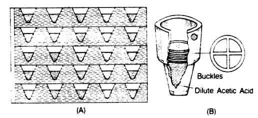
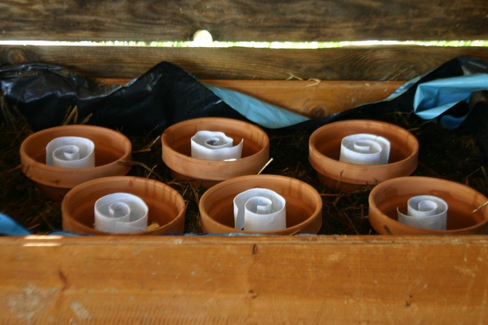
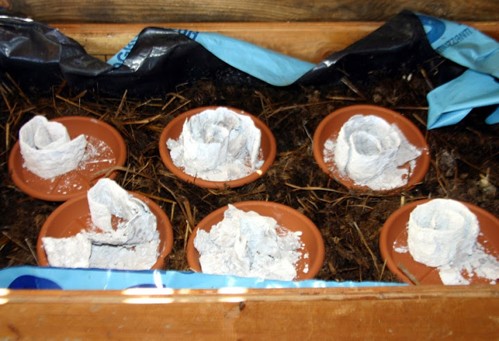
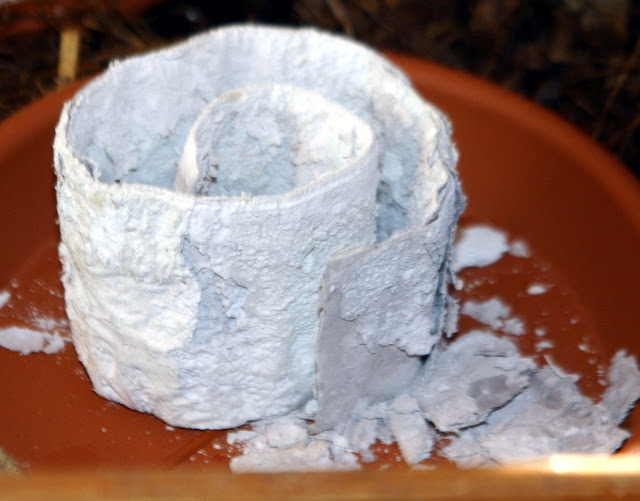

Dal 2012 l'unione europea ha messo al bando definitivamente la produzione di
alcune sostanze pericolose per la salute umana, come il carbonato basico di
piombo, il materiale alla base di uno dei pigmenti che hanno fatto la storia
dell'arte: la biacca, il bianco per eccellenza.
Questo pigmento non può più essere fabbricato in Europa, ma alcune case inglesi
lo importano, seppur con molte restrizioni, da paesi extracomunitari e ne
realizzano il bianco in pasta pronta che però vendono a prezzi ormai proibitivi.
Molti artisti utilizzano ancora questo bianco perché possiede caratteristiche
completamente diverse rispetto a quello di titanio e a quello di zinco. In
realtà queste sue caratteristiche dipendono molto dalla procedura adottata nella
sua fabbricazione. Quello che si trova ancora in commercio presenta
caratteristiche un po' diverse da quello che si poteva reperire nel seicento e
nel settecento.
La storia di questo pigmento la si può trovare sulla rete, cosi come alcuni
metodi per la sua fabbricazione, fra questi il “metodo dutch”, conosciuto anche
come “metodo stack” e “metodo olandese”.
Vediamo questo metodo (tratto da "Industrial chemistry"; di B. K. Sharma):
"Il
bianco di piombo è uno dei più antichi pigmenti bianchi utilizzati,
oggi caduto in disuso. La biacca è il carbonato basico di piombo formato da
carbonato e idrato di piombo, 2PbCO3.Pb(OH)2.
La percentuale di carbonato, PbCO3 è il 68,9% , quella
dell'idrossido, Pb(OH)2, è 3l.l%. Possono essere presenti
anche altre sostanze, ma la percentuale di carbonato di piombo varia tra 60,2 e
68,9 per cento.
Processo Dutch o Olandese
Questo è un vecchio processo che si basa sull'azione dell'acido acetico sul
piombo metallico in presenza di aria umida e CO2. Come risultato il piombo
metallico viene lentamente convertito in carbonato basico di piombo. La reazione
avviene in un particolare tipo di camera, camera stack che viene divisa strati a
scomparti. Il processo consiste nel formare diverse pile di vasi posti l'uno
sull'altro. Lo stack viene preparato formando un letto di sterco di cavallo e
cortecce al piano terra della camera stack; un certo numero di vasi di
terracotta viene poi riposto su questo letto; nella parte inferiore del vaso,
sotto la sporgenza o spalla, viene messo dell'aceto al 3% di acido acetico;
sulla parte superiore di ciascun vaso di terracotta vengono poi disposti un
certo numero di dischi di piombo, sottili e forati, di 6 pollici di diametro. Va
notato che i dischi di piombo non sono direttamente messi a contatto con
l'aceto, ma separati con una spalla di legno posta sopra una sporgenza del vaso.
Dopo che la prima fila di vasi è stata completata, questi vengono coperti con
delle tavole sulle quali si fa un 'altro letto di sterco e cortecce e quindi di
vasi con il piombo. Questa operazione si ripete più volte fino a riempie
l'intera camera con le pile poste l'una sopra 'altra. Una camera di 4 x 7 metri
quadrati con circa 12 pile, arriva acontenere circa 3500 kg di piombo e l25.000
litri di aceto. Con questo metodo è possibile ottenere circa il 80% di
conversione del piombo in bianco di piombo. Dei tubi vengono disposti a
collegare le varie pile della camera e poi portati all'esterno per poter
permettere la ventilazione.

Il metodo che ho utilizzato io per
formare la biacca si basa proprio sul metodo dutch.
È vero che questo sito nasce per raccogliere le mie esperienze relative alla
fabbricazione in casa della biacca, ma l'ho voluto anche arricchire di altre
informazioni utili che ho potuto reperire in rete, sia per quando riguarda la
storia, sia la fabbricazione e sia per quando riguarda tutte le precauzioni che
dovrebbe prendere chi volesse provare a fare la mia stessa esperienza sulla
biacca, in quanto si tratta di una sostanza effettivamente molto tossica per
l'organismo ed altamente inquinante per l'ambiente.
Più in fondo c'è un estratto ricavato dal diario che tenevo in rete lo scorso
anno. Qui sono annotate anche le spese che ho sostenuto, relative, ovviamente,
all'anno 2012.
Per mia volontà avevo deciso di non utilizzare più il bianco di piombo in quando
troppo oneroso in termini di spreco di tempo e di attenzioni nel fabbricarmelo.
Presi così la consuetudine di dipingere con il bianco di titanio.
Avevo ancora della biacca in ammollo nell'acqua di il lavaggio dall'anno
prima, così decisi di farla seccare e di macinarla in modo da ripulire il
laboratorio che avevo installato. Quando ho aperto la bacinella l'acqua non era
ancora evaporata così la lasciai all'aria affinché il prodotto si essiccasse.
Dopo due giorni notai che in superficie si era formata una spessa e pesante
crosta salina semitrasparente, proprio come il sale; per non inquinare
l'ambiente decisi di metterla da parte in uno dei recipienti ermetici utilizzati
per la raccolta della biacca.
Dopo altri due giorni la biacca si era ormai seccata, così ne prelevai una parte
e ne feci del bianco di piombo. Il bianco di piombo più bello che mi sia
riuscito, bianchissimo. Tutto felice decisi di utilizzarlo, ma rimasi molto
deluso. Quel bianco aveva perso proprio quella caratteristica che a me piaceva,
era si bianchissimo, ma anche opaco come il titanio e come il titanio opacizzava
i colori con i quali veniva sfumato. Delusione totale. Cosa era accaduto?
Io sono tuttora del parere che quella coltre cristallina altro non fosse che
dell'acetato di piombo contenuto nella biacca che non è stato possibile
eliminare tramite il lavaggio, e che dopo un anno abbia avuto il tempo di venire
a galla separandosi dal resto della biacca. Con l'asciugatura dell'acqua si
sarebbe poi cristallizzato.
Probailmente il prodotto così ottenuto non rispetterebbe più le caratteristiche
tipiche del bianco di piombo per come lo conosciamo.
Ho preso quel sale e l'ho macinarlo nell'olio, ma è risultato troppo duro e non
ci sono riuscito del tutto, comunque ho provato ad utilizzarlo ugualmente con i
colori e sono rimasto estremamente sorpreso dal suo comportamento: anche se
bianco alla vista, risulta quasi del tutto trasparente, ma la sorpresa non è
questa. Si comporta come una sorta di balsamo, conferendo ai colori una
pennellabilità eccezionale, non facendoli apparire mai saturi, come se fossero
depositati sulla tela in strati sottilissimi, tipo velatura, ma una velatura
perfetta, senza quei tipici accumuli di colori fra le trame della tela. Sono
rimasto veramente sorpreso.
Sono rimasto così sorpreso dal
risultato che così ho iniziato ad interessarmi di nuovo a questo bianco, ma
sotto una luce diversa. L'idea è quella di scoprire che relazione c'è tra
l'acetato di piombo, o quello che io interpreto come tale, e le proprietà
tipiche del bianco di piombo.
Il bianco di piombo ottenuto nelle varie epoche
e nei vari luoghi, non è sempre stato lo stesso perché variabile nella
composizione.
La parte dominante nella sua composizione è il carbonato di piombo legato,
almeno in massima parte, al piombo idrato (che seppur instabile, potrebbe esser
presente anche da solo), ma anche acetato di piombo e tracce ossido di piombo.
Secondo la treccani la biacca senza acetato di piombo costituisce il bianco
tenero, mentre quella che contiene anche una certa percentuale di acetato di
piombo il bianco duro, questo forse perché l'acetato si presenta sotto forma di
cristalli molto duri da macinare. La composizione variabile fra il carbonato e
l'acetato potrebbe essere anche la motivazione per cui alcuni bianchi risultano
più bianchi e coprenti, mentre altri più trasparenti e meno candidi. Molto
probabilmente è proprio il contenuto di acetato di piombo a rendere il bianco
meno coprente e meno candido, tuttavia è anche molto probabile che sia proprio
questo a conferire alla biacca quella caratteristica che molti artisti cercano
in questo bianco.
Oggi ci sono altri bianchi in commercio, in particolare l'opacissimo e candido
bianco di titanio, ma un tempo quello di piombo era l'unico utile nella pittura
ad olio, la cosiddetta pittura da cavalletto. Una volta ottenuta la biacca
grezza, questa veniva da alcuni, ciò dipendeva anche dal metodo adoperato per
ottenerla, macinata direttamente con l'olio, ma nella maggioranza dei casi si
attuava un lavaggio atto a purificarla, ma anche a differenziarla, cioè ad
ottenere diverse tipologie di bianchi.
Questo lavaggio veniva effettuato
mettendo la biacca a mollo nell'acqua e successivamente facendola scorrere a
cascata tra una serie di bassi recipienti collegati fra di loro. Questo processo
di solito veniva ripetuto più volte e alla fine si ottenevano diversi tipi di
biacca la migliore delle quali era quella contenuta nell'ultimo scomparto,
quella definita più leggera e che dava più trasparenza ai colori.
Queste ultime informazioni le ho tratte dal “supplemento al nuovo dizionario
universale tecnologico o di arti e mestieri” alla voce “biacca” ed alla voce
“bianco d'argento”, in quest'ultima esso viene definito il più bello che “giova
a conservare ai colori la trasparenza”. A destra allego gli estratti delle
pagine originali.
Una volta essiccata, la biacca è
pronta per essere macinata insieme all'olio di lino, o altro olio. Questa è una
delle fasi più brutte in quando la biacca a volte si può presentare davvero dura
e bisogna frantumarla, col rischio di sollevare delle pericolosissime polveri,
inoltre anche il lavoro di macinatura vero e proprio bisogna effettuarlo fino a
quando non si sia raggiunta una consistenza cremosa ed uniforme, cioè senza
grumi. Ci vuole un bel po' di tempo per farne un tubetto da 60 cc.
Su un sito in lingua inglese, però, ho trovato un'informazione utilissima: alla
biacca ancora in pasta acquosa si può aggiungere direttamente il giusto
quantitativo di olio (circa il 30% del peso della biacca), e lasciare che poi
l'acqua evapori tutta. Io ho provato e posso dire che funziona, basta mischiare
di tanto in tanto finché in un paio di giorni non venga espulsa tutta l'acqua in
eccesso tramite l'evaporazione (tra l'altro non ho utilizzato nemmeno il
macinello). Ovviamente conviene portare la pasta al contenuto minimo di acqua
prima di mettere l'olio.
Di seguito riporto sia il link del sito in lingua inglese che l'estratto della
pagina tradotta.
“La polvere è stata poi essiccata ed imballata per la
spedizione o spedita come una pasta. Un vantaggio del processo è che non era
necessario essiccare la pasta del bianco di piombo, rimuovendo la sua acqua.
Tutto quello che serviva era macinare la pasta con l'olio di lino, e il bianco
di piombo avrebbe accolto l'olio e respinto l'acqua residua, per dare biacca a
olio. ”
http://en.wikipedia.org/wiki/White_lead
"Se la biacca contiene ancora piccole quantità di acido
acetico costituisce il bianco duro; se questo è tutto eliminato, il bianco
tenero."
Tratto da:
http://www.treccani.it/enciclopedia/biacca_(Enciclopedia-Italiana)/
Fabbricazione della Biacca con metodo casalingo:
Questo è il modo con cui ho proceduto per fabbricarmi la biacca
Per prima cosa vi dovete procurare il materiale occorrente:
6 strisce di lamina di piombo 33 cm x 6 cm x 1 mm (ricavate da una di 100 x 12)
...€ 5
9 litri di aceto bianco di scarsa qualità ...€ 5
6 vasi di terracotta da 14-15 cm di diametro ... € 3 - 4
un'asta di legno 200 cm x 3 cm x 1 cm ... € 1
una cinquantina di kilogrammi di sterco fresco di cavallo ... gratis
materiale tannico di cortecce di castagno in decomposizione ...gratis
un foglio di nailon nero 150 cm x 300 cm recuperabile da qualche parte ...gratis
un vecchio cassone di legno (L=100, H=60, P=60) in cui deporre i 6 vasi
-Tagliate le strisce di piombo e avvolgetele su se stesse a spirali piuttosto
larghe.
-Con l'asta di legno realizzate le croci che andranno sistemate all'interno dei
vasi per sostenere le spirali di piombo in modo che le stesse non stiano a
contatto diretto con l'aceto (guardate il disegno esplicativo).
-Tappate i fori dei vasi con del silicone.
-Passate l'interno dei vasi con olio di lino per renderli idrorepellenti.
-Trasferite ogni bottiglia di aceto in una bottiglia di plastica da 2 litri e
riponetele piane nel reparto freezer del frigo con la testa rialzata in modo che
il ghiaccio non la ostruisca . Dopo qualche ora, quando l'acqua dell'aceto sarà
completamente ghiacciata, riversate le bottiglie a testa in giù in un recipiente
per far fuoriuscire un buon terzo del liquido che costituirà un aceto molto più
concentrato.
-Posizionate il nailon all'interno del cassone, come se lo rivestiste,
conservandone una porzione anche per la successiva copertura.
-Sistemate lo sterco, le cortecce ed il materiale tannico nel cassone fino a
circa trenta cm di altezza.
-Sistemate i vasetti riponendoli e spingendoli un po' a fondo nello sterco ed
inserendo poi altro sterco fra un vasetto e l'altro.
-Ponete l'aceto nei vasi, poi le croci e le spiri di piombo sopra di esse
(vedere il disegno esplicativo).
-Ricoprite i vasetti con il lembo di nailon avanzato e chiudete il cassone con
un coperchio.
-ASPETTATE qualche settimana, anche se di tanto in tanto potete visionare cosa
sta realmente accadendo. Mi raccomando di indossare sempre guanti e mascherina.
DIARIO
Ecco il diario che ho tenuto durante il mio primo esperimento:
25 maggio 2012
Le spire di piombo vengono messe a dimora e dopo sole 24 ore risultano già
completamente bianche.
1 giugno 2012
Dopo una settimana circa le spire sono già molto cariche di carbonato, ho fatto
già una prima raccolta, 250 grammi circa.
Ho effettuato alcuni lavaggi con acqua e ripetuti travasi con l'aiuto di tre
bacinelle di vetro (provviste di coperchio in gomma), alla fine ho raccolto il
presunto carbonato basico di piombo e ho lasciato evaporare l'acqua residua
dell'ultima bacinella che adesso dovrebbe contenere un carbonato sporco, che
comunque utilizzerò in qualche modo.
Non ho buttato niente, ne acqua ne carbonato residuo; sono stato molto attento
nel maneggiare i materiali che come si sa sono molto tossici; le pinze
utilizzate per prendere le spiri di piombo non le ho lavate, ma le ho conservate
in un apposito contenitore per essere riutilizzate successivamente.
Ho frantumato i vari pezzi alla buona senza far sollevare polveri, quindi ho
effettuato una prima macinazione grossolana con olio di lino, e poi una seconda
molto più fine. Il colore è indubbiamente bianco, ma se confrontato con quello
della “michael harding” si nota che vira leggermente verso il grigio freddo,
anche se senza il confronto diretto non si sarebbe riusciti a notarlo.
Rispetto al “michael harding” il colore si presenta leggermente più scuro, un
po' più coprente, meno filaccioso ed asciuga prima. Tutto sommato ci si dipinge
bene, forse anche meglio dell'originale (il riferimento è sempre al “michael
harding”).
Giorno 8 giugno 2012
Seconda raccolta, circa mezzo kg.
Giorno 12 giugno 2012
Ormai tutto il piombo si e già trasformato, persistono ancora solo piccoli
residui di lamina di piombo. Tutto questo in appena tre settimane.


